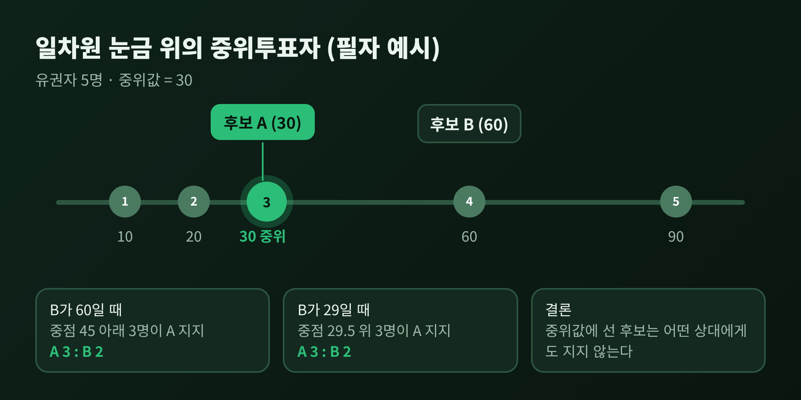
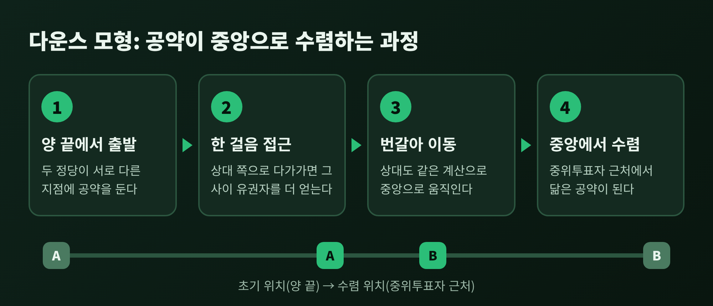
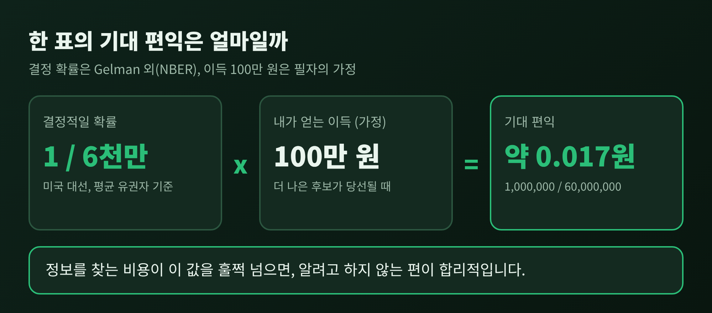
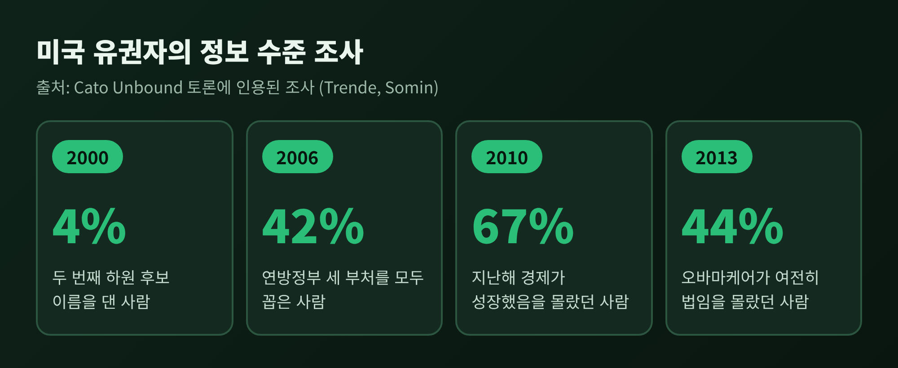
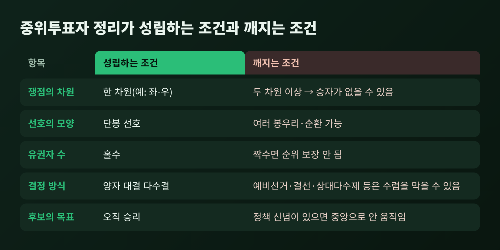

중위투표자 정리와 합리적 무지, 정당 공약이 중간으로 몰리는 이유

이번 글에서는 공공선택론의 두 기둥인 중위투표자 정리와 합리적 무지를 정리해 보겠습니다. 결론부터 말씀드리면 이렇습니다. 한 표가 결과를 바꿀 확률이 극히 작아서 유권자는 정보를 모으지 않는 쪽이 합리적이고, 선거에서 이기려는 두 후보는 가운데 유권자의 위치로 공약을 옮기게 됩니다. 다운스 모형이 이 둘을 어떻게 잇는지, 애로우의 정리와는 무슨 관계인지, 그리고 이론이 어디서 어긋나는지까지 차례로 살펴봅니다.
■ 중위투표자 정리: 가운데 한 사람이 결정한다
유권자를 왼쪽에서 오른쪽까지 한 줄로 세워 보겠습니다. 좌우 성향이든, 세금 수준이든 좋습니다. 줄의 한가운데에 선 사람이 중위투표자입니다.
이 개념을 정리한 사람은 던컨 블랙입니다. 블랙은 1948년 『Journal of Political Economy』에 실은 논문 "On the Rationale of Group Decision-making"에서 이를 도출했습니다. 케네스 애로우도 독립적으로 같은 결론에 이르렀다고 전해집니다.
정리의 내용은 간단합니다. 유권자와 후보를 한 줄 위에 놓고, 유권자가 자기와 가까운 후보를 더 좋아한다면, 양자 대결 다수결의 승자는 중위투표자가 가장 선호하는 후보입니다. 성립 조건은 몇 가지입니다. 선호가 한 차원에 배열되어야 하고, 각자 가장 원하는 지점이 하나여야 하며, 다수결로 결정해야 합니다. 이렇게 한쪽 끝에서 멀어질수록 만족이 줄어드는 모양을 단봉(單峰) 선호라고 부릅니다.
숫자로 보면 더 분명합니다. 아래는 필자가 설명을 위해 만든 예시입니다. 유권자 다섯 명이 0에서 100 사이 눈금의 10, 20, 30, 60, 90에 서 있다고 하겠습니다. 중위는 30입니다. 후보 A가 30에 서면 어느 위치의 후보 B를 만나도 3대 2로 이깁니다. B가 60에 서면 중점 45 아래의 세 명이 A를 택하고, B가 29까지 바짝 붙어도 30, 60, 90의 세 명이 여전히 A 쪽입니다. 반대로 A가 60에 있다면 B는 45 근처로 오기만 해도 이깁니다.

예전에는 "다수가 결정한다"는 말이 막연한 구호에 가까웠습니다. 이제는 "다수결의 결과는 가운데 한 사람의 선호와 같다"는 구체적인 명제가 됩니다.
■ 다운스 모형: 해변의 가게에서 선거판으로
이 정리를 정당 경쟁으로 끌고 온 사람이 앤서니 다운스입니다. 1957년 저서 『An Economic Theory of Democracy』에서 다운스는 정당을 표를 최대로 모으려는 조직으로 보았습니다.
발상의 뿌리는 1929년 해럴드 호텔링의 논문 "Stability in Competition"에 있습니다. 호텔링은 시장의 생산자들이 제품을 가능한 한 비슷하게 만드는 편이 합리적이라고 보았고, 이를 최소 차별화 원리라 불렀습니다. 해변에서 푸드카트를 여는 상인들이 가운데로 모여드는 장면이 흔한 비유입니다. 다운스는 이 논리를 가게에서 선거로 옮겼습니다.
흐름은 이렇습니다.
- 두 정당이 일차원 눈금 위에서 서로 다른 지점에 공약을 둡니다.
- 한쪽이 상대 쪽으로 한 걸음 다가가면 그 사이 유권자를 더 얻습니다.
- 상대도 같은 계산을 하므로 둘은 번갈아 중앙으로 움직입니다.
- 끝에는 두 정당이 중위투표자의 위치 근처에서 만나 서로 닮은 공약을 내놓습니다.

다운스는 8장에서 몇 가지 가설도 함께 내놓았습니다. 양당제의 정당은 강령이 서로 닮고, 다당제의 정당은 이념적으로 구분된다는 것이 하나입니다. 양당제에서는 강령을 모호하게 두는 편이 각 정당에 합리적이라는 가설도 있었습니다. 유권자의 이념 분포가 두 봉우리로 갈라지면 타협하는 중도파가 오히려 벌을 받아 합의가 어려워진다는 지적도 덧붙였습니다.
다만 이 수렴은 제도에 기대고 있습니다. 위키백과의 정리에 따르면 예비선거, 결선투표, 상대다수제 같은 방식은 중위투표자 성질을 갖지 않아 수렴을 막을 수 있습니다. 한편 2004년 버나드 그로프먼은 다운스의 분석이 단순 수렴론보다 훨씬 섬세하다고 주장했습니다. 다운스 자신도 프리드먼의 말을 빌려, 모형은 가정이 현실적인지가 아니라 예측이 맞는지로 평가해야 한다는 입장을 밝혔습니다.
■ 합리적 무지: 한 표의 값은 얼마인가
그런데 중위투표자 정리는 유권자가 완전한 정보를 가졌다고 가정합니다. 다운스는 바로 이 가정을 스스로 허물었습니다. 같은 책에서 합리적 무지라는 개념을 내놓았기 때문입니다.
합리적 무지란 지식을 얻는 비용이 기대 편익보다 클 때 알려고 하지 않는 선택을 뜻합니다. 무능이나 게으름과는 다른 이야기입니다. 위키백과의 예를 하나 옮기면, 시급 10달러로 195~205시간 일할 직원 후보 두 명 사이에서 고민한다고 합시다. 면접을 하루 더 보는 데 100달러가 들고, 그로 인해 아낄 수 있는 돈은 많아야 100달러 안팎입니다. 이때는 동전을 던지는 편이 오히려 합리적입니다.
선거에서는 이 계산이 훨씬 가혹해집니다. 한 표가 결과를 바꿀 확률 때문입니다. 겔만, 실버, 에들린이 NBER에 낸 논문은 미국 유권자가 대통령 선거에서 결정적인 표가 될 확률을 평균 6천만 분의 1로 추정했습니다. 가장 높은 뉴멕시코, 버지니아, 뉴햄프셔, 콜로라도에서도 약 1천만 분의 1입니다. 법학자 일리야 소민도 같은 크기의 수치를 인용합니다. 두 소스가 서로 맞아떨어지는 셈입니다.
이를 필자가 만든 가정으로 계산해 보겠습니다. 더 나은 후보가 당선될 때 내가 얻는 이득을 100만 원이라 가정하면, 기대 편익은 1,000,000을 60,000,000으로 나눈 약 0.017원입니다. 후보 공약을 한 시간 읽는 비용이 이보다 훨씬 크다는 것은 분명합니다.

여기서 다운스는 한발 더 나갔습니다. 개인의 표가 결정적일 확률이 사라질 만큼 작다면, 투표 행위 자체가 비합리적이라는 것입니다. 『Concise Encyclopedia of Economics』는 이를 두고 풀리지 않는 퍼즐은 미국의 투표율이 왜 이렇게 낮은가가 아니라 왜 이렇게 높은가라고 적습니다. 이를 메우려는 설명으로는 표현적 편익, 이타성, 시민적 의무 같은 항목이 제시됩니다.
■ 실제 유권자는 얼마나 아는가
이론이 맞다면 유권자의 정보 수준은 낮아야 합니다. 『Cato Unbound』 토론에 인용된 미국의 조사 결과를 보겠습니다.
- 2000년: 자기 선거구의 두 번째 하원 후보 이름을 댄 사람은 4%였습니다.
- 2006년: 연방정부의 세 부처(입법, 행정, 사법)를 모두 꼽은 사람은 42%였습니다.
- 2010년: 지난해 경제가 성장했다는 사실을 몰랐던 사람이 67%였습니다.
- 2013년: 오바마케어가 여전히 법이라는 사실을 몰랐던 사람이 44%였습니다.

다만 이 수치를 곧바로 "유권자는 어리석다"로 읽을 수는 없습니다. 같은 토론에서 반론도 나왔습니다. 션 트렌드는 주요 쟁점에서는 유권자가 충분히 안다고 보았습니다. 제프리 프리드먼은 합리적 무지 이론 자체를 받아들이지 않았습니다. 사람들은 알기를 포기한 것이 아니라 이미 충분히 안다고 믿는 상태, 곧 비의도적 무지에 있다는 것입니다. 70%가 자기 표가 정말 중요하다고 답한 조사도 근거로 들었습니다. 소민은 이 설명으로는 기초 지식의 부족이 이토록 깊고 오래가는 이유를 설명하기 어렵다고 맞섰습니다. 어느 쪽이 맞는지는 이 자료만으로 단정하기 어렵습니다.
한 걸음 더 나간 이론도 있습니다. 브라이언 캐플런은 2007년 『The Myth of the Rational Voter』에서 합리적 비합리성을 말했습니다. 틀린 믿음이 비싼 대가를 치르게 한다면 사람들은 신중해집니다. 그러나 정치적 믿음은 가져도 값이 들지 않으니, 기분 좋은 믿음을 마음껏 소비하게 된다는 논리입니다. 그는 1996년 일반인 1,510명과 경제학 박사 250명을 비교한 설문으로 반시장, 반외국, 일자리 만들기, 비관의 네 편향을 짚었습니다. 합리적 무지가 "모르는 것"이라면, 합리적 비합리성은 "치우친 채로 아는 것"입니다.
두 이론은 함께 읽을 때 의미가 큽니다. 정보를 모으지 않는 유권자가 많다면, 정당 입장에서 공약을 모호하게 두는 것도, 중위 근처에 몰려 있는 것도 이해가 갑니다.
■ 애로우와 중위투표자 정리의 관계
애로우의 불가능성 정리를 빼고 이 이야기를 마칠 수는 없습니다. 케네스 애로우는 1951년 저서 『Social Choice and Individual Values』에서(증명은 1950년이라는 설명도 있습니다) 대안이 셋 이상이면 다음 조건을 모두 만족하는 사회적 선택 규칙이 없음을 보였습니다. 모든 선호 조합을 다루는 비제한 정의역, 순환 없는 사회적 순서, 만장일치 존중에 해당하는 약한 파레토, 비독재, 무관한 대안의 독립성입니다. 애로우는 1972년 노벨 경제학상을 받았습니다.
그렇다면 중위투표자 정리는 이 결과와 모순일까요? 그렇지 않습니다. 스탠퍼드 철학 백과가 설명하듯, 애로우의 정리는 허용하는 선호의 범위를 제한하면 적용되지 않습니다. 선호가 단봉이고 유권자 수가 홀수이면 양자 대결 다수결은 늘 일관된 순위를 줍니다. 1위는 중위투표자의 최선점입니다. 즉 중위투표자 정리는 애로우의 불가능성이 풀리는 특수한 조건을 보여줍니다. 일반적인 해법이 아니라는 점은 분명히 해 둘 필요가 있습니다.
조건이 깨지면 상황이 달라집니다. 쟁점이 두 차원 이상이면 맥켈비-스코필드의 혼돈 정리에 따라 콩도르세 승자가 아예 없을 수 있습니다. 순환 다수의 구조는 앞서 다룬 콩도르세 역설 글에서 살펴보았으니 여기서는 줄이겠습니다.

■ 현실의 증거: 맞는 곳과 어긋나는 곳
이론이 실제와 얼마나 맞는지는 실증 연구가 엇갈립니다. 위키백과가 정리한 사례를 옮깁니다.
- 맞는 쪽: 1920년 미국 여성 참정권 이후 보건 지출이 늘고 아동 사망률이 8~15% 줄었다는 연구(밀러, 2008)가 있습니다. 중위투표자가 이동하자 정책이 따라 움직인 셈입니다. 79개국을 본 밀라노비치(2000)는 세전 소득 불평등이 클수록 재분배가 더 강하다는 점을 확인했습니다.
- 어긋나는 쪽: 레빗(1996)은 같은 주에서 정당별로 한 명씩 뽑힌 미국 상원의원 두 사람이 이론의 예측처럼 똑같이 투표하지 않았고, 유사도는 무작위로 짝지은 경우보다 조금 높은 정도에 그쳤다고 보았습니다. 인도에서는 소외 집단에 의석을 할당하거나 여성이 마을 의회를 이끌면 정책이 해당 집단의 선호 쪽으로 움직였습니다. 캘리포니아 주민투표에서 공공지출을 결정한 유권자는 중위가 아니라 소득 4분위였다는 연구(브루너·로스, 2010)도 있습니다.
- 중간: 스위스 연구(2012)에서 중위투표자 모형은 입법 투표를 무작위보다 17.6% 더 잘 설명했습니다.
결론은 하나로 모이지 않습니다. 중위투표자는 정책을 끌어당기는 힘이지, 정책을 완전히 정하는 힘은 아니라고 읽는 편이 정직해 보입니다.
정리하면 이렇습니다.
한 표의 값이 너무 작아 유권자는 정보를 모으지 않고, 그 유권자들의 가운데를 노리는 후보들은 닮아 갑니다. 다만 이 그림은 한 차원, 단봉 선호, 적절한 제도라는 조건 위에서만 선명합니다.
"유권자의 무지는 게으름이 아니라 계산의 결과일 수 있다."
이 문장을 받아들이면 투표를 보는 눈이 조금 달라집니다. 무지를 탓하기 전에, 정보를 얻는 비용이 왜 이렇게 높은가를 먼저 묻게 되기 때문입니다. 공약이 비슷해 보인다고 느끼셨다면, 그것이 우연이었는지 구조였는지 이 글의 틀로 한 번 따져 보시길 권합니다.